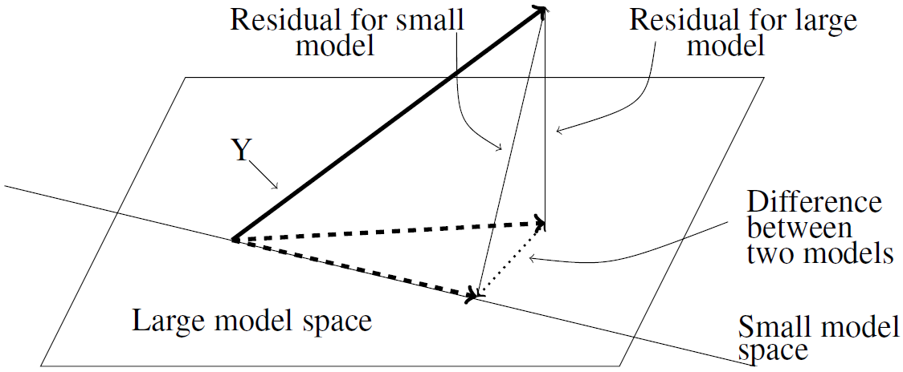

一、模型检验
一旦我们完成了线性回归的参数拟合之后，就要对模型进行检验。那么为什么要进行检验？目的无非有两个：
检测模型的显著性 ，即模型结构是否存在，在数学上也就是验证回归系数β 1 , ⋯ , β p \beta_1,\cdots,\beta_p β 1 , ⋯ , β p 检验回归系数的显著性 ，即到底哪些回归系数可以认为不是0的，即真正对观测值y y y
那么接下来我们就从一般线性回归开始，介绍模型检验的原理和方法。
1.1 一般线性回归的检验
为了不失一般性，并且将模型显著性和系数显著性检验统一起来，我们设模型为：
Y = X n × p β + e , e ∼ N ( 0 , σ 2 I n ) Y=X_{n\times p}\beta+e,e\sim N(0,\sigma^2I_n)
Y = X n × p β + e , e ∼ N ( 0 , σ 2 I n )
假定r a n k ( X ) = r rank(X)=r r ank ( X ) = r H m × p H_{m\times p} H m × p r a n k ( H ) = m rank(H)=m r ank ( H ) = m
原假设/零假设H 0 H_0 H 0 H β = 0 H\beta=0 H β = 0
备择假设H 1 H_1 H 1 H β ≠ 0 H\beta\ne0 H β = 0
要完成对假设的检验，需要构造一些统计量。我们借助似然函数，构造两个假设的似然比：
Λ = sup H 1 L ( X , Y , β , σ 2 ) sup H 0 L ( X , Y , β , σ 2 ) \Lambda=\frac{\sup_{H_1}L(X,Y,\beta,\sigma^2)}{\sup_{H_0}L(X,Y,\beta,\sigma^2)}
Λ = sup H 0 L ( X , Y , β , σ 2 ) sup H 1 L ( X , Y , β , σ 2 )
如果模型不显著，似然比应该为1。如果似然比Λ \Lambda Λ H 1 H_1 H 1 H 1 H_1 H 1
对于分子来说，当β ^ = ( X T X ) − X T Y \hat\beta=(X^TX)^-X^TY β ^ = ( X T X ) − X T Y σ 2 = ∣ ∣ Y − X β ^ ∣ ∣ 2 n \sigma^2=\frac{||Y-X\hat\beta||^2}{n} σ 2 = n ∣∣ Y − X β ^ ∣ ∣ 2
sup H 1 L ( X , Y , β , σ 2 ) = ( 2 π e n ∣ ∣ Y − X β ^ ∣ ∣ ) − n \sup_{H_1}L(X,Y,\beta,\sigma^2)=\left(\sqrt{\frac{2\pi e}{n}}||Y-X\hat\beta||\right)^{-n}
H 1 sup L ( X , Y , β , σ 2 ) = ( n 2 π e ∣∣ Y − X β ^ ∣∣ ) − n
对于分母来说，当β ^ \hat\beta β ^ H β = 0 H\beta=0 H β = 0 β ^ H \hat\beta_H β ^ H σ H 2 = ∣ ∣ Y − X β ^ H ∣ ∣ 2 n \sigma^2_H=\frac{||Y-X\hat\beta_H||^2}{n} σ H 2 = n ∣∣ Y − X β ^ H ∣ ∣ 2
sup H 0 L ( X , Y , β , σ 2 ) = ( 2 π e n ∣ ∣ Y − X β ^ H ∣ ∣ ) − n \sup_{H_0}L(X,Y,\beta,\sigma^2)=\left(\sqrt{\frac{2\pi e}{n}}||Y-X\hat\beta_H||\right)^{-n}
H 0 sup L ( X , Y , β , σ 2 ) = ( n 2 π e ∣∣ Y − X β ^ H ∣∣ ) − n
因此似然比可以写为：
Λ = ( ∣ ∣ Y − X β ^ H ∣ ∣ 2 ∣ ∣ Y − X β ^ ∣ ∣ 2 ) n 2 \Lambda=\left(\frac{||Y-X\hat\beta_H||^2}{||Y-X\hat\beta||^2}\right)^{\frac{n}{2}}
Λ = ( ∣∣ Y − X β ^ ∣ ∣ 2 ∣∣ Y − X β ^ H ∣ ∣ 2 ) 2 n
接下来，我们想要将似然比和一个统计量关联起来。似然比中出现残差的平方，并且我们认为残差服从正态分布（联想到卡方分布），那么是不是可以让分子分母分别除以各自的自由度，就能得到一个F F F F F F
Λ = ( ∣ ∣ Y − X β ^ H ∣ ∣ 2 ∣ ∣ Y − X β ^ ∣ ∣ 2 ) n 2 = ( 1 + k n − r F ) n 2 \Lambda=\left(\frac{||Y-X\hat\beta_H||^2}{||Y-X\hat\beta||^2}\right)^{\frac{n}{2}}=\left(
1+\frac{k}{n-r}F
\right)^\frac{n}{2}
Λ = ( ∣∣ Y − X β ^ ∣ ∣ 2 ∣∣ Y − X β ^ H ∣ ∣ 2 ) 2 n = ( 1 + n − r k F ) 2 n
其中：
F = ( E S S H − E S S ) / k E S S / ( n − r ) ∼ F k , n − r F=\frac{(ESS_H-ESS)/k}{ESS/(n-r)}\sim F_{k,n-r}
F = ESS / ( n − r ) ( ES S H − ESS ) / k ∼ F k , n − r
并且E S S = ∣ ∣ Y − X β ^ ∣ ∣ 2 ESS= ||Y-X\hat\beta||^2 ESS = ∣∣ Y − X β ^ ∣ ∣ 2 E S S H = ∣ ∣ Y − X β ^ H ∣ ∣ 2 ESS_H= ||Y-X\hat\beta_H||^2 ES S H = ∣∣ Y − X β ^ H ∣ ∣ 2 k = r + m − r a n k ( X H ) k=r+m-rank\begin{pmatrix}X\\ H\end{pmatrix} k = r + m − r ank ( X H )
只要计算了似然比，就能根据公式计算F F F F F F
你可能注意到上面的表述中出现了残差 (residual)一词。残差是指观测值和拟合值之间的差距 ，而之前我们提到的误差e e e 观测值和真实值之间的差距 。我们在构建模型时使用的是“真实值=线性预测子+误差”，但是在用实际数据拟合时，“真实值”是未知的，只能通过观测值去描述；“线性预测子”是未知的，只能通过拟合值去描述；那么观测值和拟合值之间的差距就是残差。
除了通过代数层面去理解F F F
β = ( X T X ) − X T Y \beta=(X^TX)^{-}X^TY
β = ( X T X ) − X T Y
也就是说，我们通过拟合得到的预测值为：
Y ^ = X β ^ = X ( X T X ) − X T Y = P X Y \hat Y=X\hat\beta=X(X^TX)^-X^TY=P_XY
Y ^ = X β ^ = X ( X T X ) − X T Y = P X Y
因此，线性回归拟合的本质就是把响应变量正交投影到由设计矩阵X X X μ ( X ) \mu(X) μ ( X ) F F F

对于同一组响应变量Y Y Y Y Y Y Y Y Y F F F
进一步地，如果μ ( H T ) ⊂ μ ( X T ) \mu(H^T)\subset \mu(X^T) μ ( H T ) ⊂ μ ( X T ) H β H\beta H β r a n k ( X ) = r a n k ( X H ) = r rank(X)=rank\begin{pmatrix}X\\ H\end{pmatrix}=r r ank ( X ) = r ank ( X H ) = r k = m k=m k = m β ^ H \hat\beta_H β ^ H
β ^ H = β ^ − ( X T X ) − H T [ H ( X T X ) − H T ] − 1 H β ^ \hat\beta_H=\hat\beta-(X^TX)^-H^T[H(X^TX)^-H^T]^{-1}H\hat\beta
β ^ H = β ^ − ( X T X ) − H T [ H ( X T X ) − H T ] − 1 H β ^
考虑完一般线性回归，接着我们把结论迁移到有约束线性回归模型当中。这里省略推导过程，如果原模型就已经有约束L q × p β = 0 L_{q\times p}\beta=0 L q × p β = 0 r a n k ( L q × p ) = q rank(L_{q\times p})=q r ank ( L q × p ) = q F F F
F = ( E S S L H − E S S L ) / ( m 1 − m 2 ) E S S L / ( n − m 1 ) F=\frac{(ESS_{LH}-ESS_L)/(m_1-m_2)}{ESS_L/(n-m_1)}
F = ES S L / ( n − m 1 ) ( ES S L H − ES S L ) / ( m 1 − m 2 )
其中：
E S S L = ∣ ∣ Y − X β ^ L ∣ ∣ 2 E S S L H = ∣ ∣ Y − X β ^ L H ∣ ∣ 2 m 1 = r a n k ( X H ) − r a n k ( L ) m 2 = r a n k ( X L H ) − r a n k ( L H ) \begin{aligned}
ESS_L&= ||Y-X\hat\beta_L||^2\\
ESS_{LH}&= ||Y-X\hat\beta_{LH}||^2\\
m_1&=rank\begin{pmatrix}X\\ H\end{pmatrix}-rank(L)\\
m_2&=rank\begin{pmatrix}X\\ L\\ H \end{pmatrix}-rank\begin{pmatrix}L\\ H \end{pmatrix}
\end{aligned}
ES S L ES S L H m 1 m 2 = ∣∣ Y − X β ^ L ∣ ∣ 2 = ∣∣ Y − X β ^ L H ∣ ∣ 2 = r ank ( X H ) − r ank ( L ) = r ank X L H − r ank ( L H )
最后，我们考虑带截距项的线性回归模型。我们对带截距项的线性回归模型进行中心化，并假定所有回归系数都是可检验的，那么其检验的假设是H ( α β I ) = 0 H\begin{pmatrix}\alpha\\ \beta_I\end{pmatrix}=0 H ( α β I ) = 0 H = ( 0 ⋮ I p − 1 ) H=\begin{pmatrix}0\vdots I_{p-1}\end{pmatrix} H = ( 0 ⋮ I p − 1 )
F = β ^ I T X ~ c T Y / ( p − 1 ) ( Y T Y − n y ‾ 2 − β ^ I T X ~ c T Y ) / ( n − p ) ∼ F p − 1 , n − p F=\frac{\hat\beta_I^T\widetilde X_c^TY/(p-1)}{(Y^TY-n\overline y^2-\hat\beta_I^T\widetilde X_c^TY)/(n-p)}\sim F_{p-1,n-p}
F = ( Y T Y − n y 2 − β ^ I T X c T Y ) / ( n − p ) β ^ I T X c T Y / ( p − 1 ) ∼ F p − 1 , n − p
如果拒绝了原假设，那么就需要逐个对β i \beta_i β i H 0 i : β i = 0 H_{0i}:\beta_i=0 H 0 i : β i = 0
β ^ i ∼ N ( β i , σ 2 c i i ) , C = ( c i i ) p × p = ( X T X ) − 1 \hat\beta_i\sim N(\beta_i,\sigma^2c_{ii}),C=(c_{ii})_{p\times p}=(X^TX)^{-1}
β ^ i ∼ N ( β i , σ 2 c ii ) , C = ( c ii ) p × p = ( X T X ) − 1
此时构造t t t
t i = β ^ i σ ^ c i i ∼ t n − p t_i=\frac{\hat\beta_i}{\hat\sigma\sqrt{c_{ii}}}\sim t_{n-p}
t i = σ ^ c ii β ^ i ∼ t n − p
注意，如果误差不服从正态分布，那么上述构造不会精确地服从t t t β ^ i \hat\beta_i β ^ i
如果接受了H 0 i H_{0i} H 0 i β i \beta_i β i
1.2 线性回归检验的推广
1.1小节考虑的检验较为特殊（但已经满足日常应用需求），为了完整性，这一小节我们进行简单的推广。
之前我们都在检验H β = 0 H\beta=0 H β = 0 H β = d H\beta=d H β = d
我们先考虑H β H\beta H β μ ( H T ) ⊂ μ ( X T ) \mu(H^T)\subset\mu(X^T) μ ( H T ) ⊂ μ ( X T ) Y = X β + e , e ∼ N ( 0 , σ 2 I n ) Y=X\beta+e,e\sim N(0,\sigma^2I_n) Y = Xβ + e , e ∼ N ( 0 , σ 2 I n ) H β = d H\beta=d H β = d β 0 \beta_0 β 0 Z = Y − X β 0 , θ = β − β 0 Z=Y-X\beta_0,\theta=\beta-\beta_0 Z = Y − X β 0 , θ = β − β 0
Z = X θ + e , e ∼ N ( 0 , σ 2 I n ) Z=X\theta+e,e\sim N(0,\sigma^2I_n)
Z = Xθ + e , e ∼ N ( 0 , σ 2 I n )
这样原假设就又重新变为H θ = 0 H\theta=0 H θ = 0 F F F
F = ( H β ^ − d ) T [ H ( X T X ) − H T ] − 1 ( H β ^ − d ) / m ∣ ∣ Y − X β ^ ∣ ∣ 2 / ( n − r ) ∼ F m , n − r F=\frac{(H\hat\beta-d)^T[H(X^TX)^-H^T]^{-1}(H\hat\beta-d)/m}{||Y-X\hat\beta||^2/(n-r)}\sim F_{m,n-r}
F = ∣∣ Y − X β ^ ∣ ∣ 2 / ( n − r ) ( H β ^ − d ) T [ H ( X T X ) − H T ] − 1 ( H β ^ − d ) / m ∼ F m , n − r
这样就能按照之前的方法检验了。
接着我们考虑μ ( H T ) ⊄ μ ( X T ) \mu(H^T)\not\subset\mu(X^T) μ ( H T ) ⊂ μ ( X T ) H H H
H = ( H 1 H 2 ) H=\begin{pmatrix}H_1\\H_2\end{pmatrix}
H = ( H 1 H 2 )
其中H 1 β H_1\beta H 1 β H 2 β H_2\beta H 2 β
H 0 : H β = 0 H_0: H\beta=0 H 0 : H β = 0 H 01 : H 1 β = 0 H_{01}:H_1\beta=0 H 01 : H 1 β = 0
于是线性回归可以写为：
Y = θ + e , θ ∈ μ ( X ) , e ∼ N ( 0 , σ 2 I n ) H 0 : θ ∈ S = { X β ∣ H β = 0 , β ∈ R p } H 01 : θ ∈ S 1 = { X β ∣ H 1 β = 0 , β ∈ R p } \begin{aligned}
&Y=\theta+e,\theta\in\mu(X),e\sim N(0,\sigma^2I_n)\\
&H_0:\theta\in S=\left\{X\beta|H\beta=0,\beta\in \mathbb R^p\right\}\\
&H_{01}:\theta\in S_1=\left\{X\beta|H_1\beta=0,\beta\in \mathbb R^p\right\}
\end{aligned}
Y = θ + e , θ ∈ μ ( X ) , e ∼ N ( 0 , σ 2 I n ) H 0 : θ ∈ S = { Xβ ∣ H β = 0 , β ∈ R p } H 01 : θ ∈ S 1 = { Xβ ∣ H 1 β = 0 , β ∈ R p }
显然有S ⊂ S 1 S\subset S_1 S ⊂ S 1
d i m S 1 = r a n k ( X H 1 ) − r a n k ( H 1 ) = r a n k ( X ) − r a n k ( H 1 ) d i m S = r a n k ( X H ) − r a n k ( H ) = r a n k ( X H 2 ) − r a n k ( H 1 H 2 ) = r a n k ( X ) − r a n k ( H 1 ) \begin{aligned}
&dim\ S_1=rank\begin{pmatrix}X\\H_1\end{pmatrix}-rank(H_1)=rank(X)-rank(H_1)\\
&dim\ S=rank\begin{pmatrix}X\\H\end{pmatrix}-rank(H)=rank\begin{pmatrix}X\\H_2\end{pmatrix}-rank\begin{pmatrix}H_1\\H_2\end{pmatrix}=rank(X)-rank(H_1)
\end{aligned}
d im S 1 = r ank ( X H 1 ) − r ank ( H 1 ) = r ank ( X ) − r ank ( H 1 ) d im S = r ank ( X H ) − r ank ( H ) = r ank ( X H 2 ) − r ank ( H 1 H 2 ) = r ank ( X ) − r ank ( H 1 )
可以发现，其实S = S 1 S=S_1 S = S 1 H 0 H_0 H 0 H 01 H_{01} H 01 不可检验的假设 (Non-testable hypothesis)。
二、参数的置信区间
前面我们讲解了如何对线性回归中的回归系数进行检验，那么接下来就需要对计算回归系数的置信区间，以把握系数的波动范围。
2.1 置信区间的构造
设Φ = H m × p β = ( h 1 T β , ⋯ , h m T β ) T \Phi=H_{m\times p}\beta=(h_1^T\beta,\cdots,h_m^T\beta)^T Φ = H m × p β = ( h 1 T β , ⋯ , h m T β ) T m m m r a n k ( H ) = m rank(H)=m r ank ( H ) = m μ ( H T ) = μ ( X T ) \mu(H^T)=\mu(X^T) μ ( H T ) = μ ( X T ) β ^ = ( X T X ) − X T Y \hat\beta=(X^TX)^-X^TY β ^ = ( X T X ) − X T Y
Φ ^ = H β ^ ∼ N m ( Φ , σ 2 H ( X T X ) − H T ) \hat\Phi=H\hat\beta\sim N_m(\Phi,\sigma^2H(X^TX)^-H^T)
Φ ^ = H β ^ ∼ N m ( Φ , σ 2 H ( X T X ) − H T )
要构造置信区间，首先要构造一个枢轴量（pivot）服从一定的分布。由于Φ ^ \hat\Phi Φ ^
( Φ ^ − Φ ) T [ H ( X T X ) − H T ] − 1 ( Φ ^ − Φ ) / σ 2 ∼ χ m 2 (\hat\Phi-\Phi)^T[H(X^TX)^-H^T]^{-1}(\hat\Phi-\Phi)/\sigma^2\sim \chi^2_m
( Φ ^ − Φ ) T [ H ( X T X ) − H T ] − 1 ( Φ ^ − Φ ) / σ 2 ∼ χ m 2
由于方差的估计值为σ ^ 2 = ∣ ∣ Y − X β ^ ∣ ∣ 2 / ( n − r ) \hat\sigma^2=||Y-X\hat\beta||^2/(n-r) σ ^ 2 = ∣∣ Y − X β ^ ∣ ∣ 2 / ( n − r ) Φ ^ \hat\Phi Φ ^
( n − r ) σ ^ 2 / σ 2 ∼ χ n − r 2 (n-r)\hat\sigma^2/\sigma^2\sim\chi_{n-r}^2
( n − r ) σ ^ 2 / σ 2 ∼ χ n − r 2
所以两个式子分别除以自由度，再相除，就可以构造一个F F F
( Φ ^ − Φ ) T [ H ( X T X ) − H T ] − 1 ( Φ ^ − Φ ) / m σ ^ 2 ∼ F m , n − r (\hat\Phi-\Phi)^T[H(X^TX)^-H^T]^{-1}(\hat\Phi-\Phi)/m\hat\sigma^2\sim F_{m,n-r}
( Φ ^ − Φ ) T [ H ( X T X ) − H T ] − 1 ( Φ ^ − Φ ) / m σ ^ 2 ∼ F m , n − r
根据这个枢轴量，我们就可以构造置信区间：
D = { Φ ∣ ( Φ ^ − Φ ) T [ H ( X T X ) − H T ] − 1 ( Φ ^ − Φ ) ≤ m σ ^ 2 F m , n − r ( α ) } D=\left\{
\Phi|(\hat\Phi-\Phi)^T[H(X^TX)^-H^T]^{-1}(\hat\Phi-\Phi)\le m\hat\sigma^2F_{m,n-r}(\alpha)
\right\}
D = { Φ∣ ( Φ ^ − Φ ) T [ H ( X T X ) − H T ] − 1 ( Φ ^ − Φ ) ≤ m σ ^ 2 F m , n − r ( α ) }
可以看出，D D D Φ ^ \hat\Phi Φ ^ P ( Φ ∈ D ) = 1 − α P(\Phi\in D)=1-\alpha P ( Φ ∈ D ) = 1 − α
另外，如果只有一个可估函数，即m = 1 m=1 m = 1 t t t
∣ h T β ^ − h T β σ ^ h T ( X T X ) − h ∣ < t n − r ( α / 2 ) \left|
\frac{h^T\hat\beta-h^T\beta}{\hat\sigma\sqrt{h^T(X^TX)^-h}}
\right|<t_{n-r}(\alpha/2)
σ ^ h T ( X T X ) − h h T β ^ − h T β < t n − r ( α /2 )
于是有：
h T β ∈ h T β ^ ± t n − r ( α / 2 ) σ ^ h T ( X T X ) − h h^T\beta\in h^T\hat\beta\pm t_{n-r}(\alpha/2)\hat\sigma\sqrt{h^T(X^TX)^-h}
h T β ∈ h T β ^ ± t n − r ( α /2 ) σ ^ h T ( X T X ) − h
2.2 同时置信区间
不知道你发现没有，上面这种置信椭球的构造有点问题。如果我们对每一个可估函数都要计算一次置信椭球，那么犯Ⅰ类错误的概率会增大，假阳性的概率会提高。因此，对每一个可估函数应当同时给出区间估计 ，由此得到的置信区间称为同时置信区间 。
这里我们主要介绍三种同时置信区间：
Bonferroni-t区间
最大模-t区间
Scheffe置信带
我们首先介绍Bonferroni-t区间 。Bonferroni提出了一个不等式，即对于一系列事件A A A
P ( ⋃ i A i ) ≤ ∑ i P ( A i ) P\left(\bigcup_iA_i\right)\le \sum_iP(A_i)
P ( i ⋃ A i ) ≤ i ∑ P ( A i )
也就是说，并事件的概率不会超过事件独立时的概率之和。因此，对于m m m α \alpha α
P ( ⋂ i = 1 m A i ) ≥ 1 − m α P\left(\bigcap_{i=1}^mA_i\right)\ge 1-m\alpha
P ( i = 1 ⋂ m A i ) ≥ 1 − m α
因此，为了取得名义上的1 − α 1-\alpha 1 − α α m \frac{\alpha}{m} m α α \alpha α
h i T β ^ ± t n − r ( α / 2 m ) σ ^ h i T ( X T X ) − h i h_i^T\hat\beta\pm t_{n-r}(\alpha/2m)\hat\sigma\sqrt{h_i^T(X^TX)^-h_i}
h i T β ^ ± t n − r ( α /2 m ) σ ^ h i T ( X T X ) − h i
这样得到的区间称为Bonferroni-t区间，这个区间的好处就是简单易行，且不需要任何额外的条件，但是缺点就是太严格，一刀切，假阳性的控制过强。
接下来就介绍最大模-t区间 。最大模-t区间依赖的是多元非中心化t t t V = ( v i j ) m × m = H ( X T X ) − H T V=(v_{ij})_{m\times m}=H(X^TX)^-H^T V = ( v ij ) m × m = H ( X T X ) − H T x i = ( h i T β ^ − h i T β ) / v i i x_i=(h_i^T\hat\beta-h_i^T\beta)/\sqrt{v_{ii}} x i = ( h i T β ^ − h i T β ) / v ii
X = ( x 1 , ⋯ , x m ) T ∼ N m ( 0 , σ 2 R ) , R = ( r i j ) m × n , r i j = v i j v i i v j j X=(x_1,\cdots,x_m)^T\sim N_m(0,\sigma^2 R),R=(r_{ij})_{m\times n},r_{ij}=\frac{v_{ij}}{\sqrt{v_{ii}v_{jj}}}
X = ( x 1 , ⋯ , x m ) T ∼ N m ( 0 , σ 2 R ) , R = ( r ij ) m × n , r ij = v ii v jj v ij
那么对于t i = x i / σ ^ t_i=x_i/\hat\sigma t i = x i / σ ^ t ∼ t m ( 0 , R , n − r ) t\sim t_m(0,R,n-r) t ∼ t m ( 0 , R , n − r )
P { max 1 ≤ i ≤ m ∣ t i ∣ ≤ t m α / 2 ( 0 , R , n − r ) } = 1 − α P\left\{\max_{1\le i\le m}|t_i|\le t_m^{\alpha/2}(0,R,n-r)\right\}=1-\alpha
P { 1 ≤ i ≤ m max ∣ t i ∣ ≤ t m α /2 ( 0 , R , n − r ) } = 1 − α
所以构造m m m
h i T β ^ ± σ ^ v i i t m α / 2 ( 0 , R , n − r ) h_i^T\hat\beta\pm \hat\sigma\sqrt{v_{ii}}t_m^{\alpha/2}(0,R,n-r)
h i T β ^ ± σ ^ v ii t m α /2 ( 0 , R , n − r )
最大模-t区间放宽了限制，但是有个缺点，即t m α / 2 ( 0 , R , n − r ) t_m^{\alpha/2}(0,R,n-r) t m α /2 ( 0 , R , n − r ) R R R X X X X X X R = I m R=I_m R = I m
最后我们介绍scheffe区间 。scheffe认为，对于任意可估的l T β ( l ∈ μ ( H T ) ) l^T\beta\ (l\in\mu(H^T)) l T β ( l ∈ μ ( H T ))
l T β ^ ± [ m F m , n − r ( α ) ] 1 2 σ ^ [ l T ( X T X ) − l ] 1 2 , m = r a n k ( H ) l^T\hat\beta\pm[mF_{m,n-r}(\alpha)]^{\frac{1}{2}}\hat\sigma[l^T(X^TX)^-l]^{\frac{1}{2}},m=rank(H)
l T β ^ ± [ m F m , n − r ( α ) ] 2 1 σ ^ [ l T ( X T X ) − l ] 2 1 , m = r ank ( H )
现证明上述置信区间的正确性 。
要完成证明，首先给出引理，引理证明过程请查看附录。
引理：设矩阵A n × n > 0 A_{n\times n}\gt0 A n × n > 0 sup b ≠ 0 ( a T b ) 2 b T A b = a T A − 1 a \sup_{b\ne0}\frac{(a^Tb)^2}{b^TAb}=a^TA^{-1}a sup b = 0 b T A b ( a T b ) 2 = a T A − 1 a
有了引理之后，由于l ∈ μ ( H T ) l\in\mu(H^T) l ∈ μ ( H T ) b b b l = H T b l=H^Tb l = H T b l T = b T H l^T=b^TH l T = b T H
令a = H ( β ^ − β ) a=H(\hat\beta-\beta) a = H ( β ^ − β )
P ( l T β ^ ≤ [ m F m , n − r ( α ) ] 1 2 σ ^ [ l T ( X T X ) − l ] 1 2 ) ⇔ P ( ∀ b , ( a T b ) 2 ≤ m F m , n − r ( α ) σ ^ 2 [ b T H ( X T X ) − H b ] ) = P ( ∀ b ≠ 0 , ( a T b ) 2 b T H ( X T X ) − H T b ≤ m F m , n − r ( α ) σ ^ 2 ) = P ( sup b ≠ 0 ( a T b ) 2 b T H ( X T X ) − H T b ≤ m F m , n − r ( α ) σ ^ 2 ) = P ( a T [ H ( X T X ) − H T b ] − 1 a ≤ m F m , n − r ( α ) σ ^ 2 ) = P { ( H β ^ − H β ) T [ H ( X T X ) − H T ] − 1 ( H β ^ − H β ) ≤ m F m , n − r ( α ) σ ^ 2 } = 1 − α \begin{aligned}&P\left(l^T\hat\beta\le [mF_{m,n-r}(\alpha)]^{\frac{1}{2}}\hat\sigma[l^T(X^TX)^-l]^{\frac{1}{2}}\right)\\ &\Leftrightarrow P\left(\forall b,(a^Tb)^2\le mF_{m,n-r}(\alpha)\hat\sigma^2[b^TH(X^TX)^-Hb]\right)\\ &=P\left(\forall b\ne0,\frac{(a^Tb)^2}{b^TH(X^TX)^-H^Tb}\le mF_{m,n-r}(\alpha)\hat\sigma^2\right)\\ &=P\left(\sup_{b\ne0}\frac{(a^Tb)^2}{b^TH(X^TX)^-H^Tb}\le mF_{m,n-r}(\alpha)\hat\sigma^2\right)\\ &=P\left(a^T[H(X^TX)^-H^Tb]^{-1}a\le mF_{m,n-r}(\alpha)\hat\sigma^2\right)\\ &=P\{(H\hat\beta-H\beta)^T[H(X^TX)^-H^T]^{-1}(H\hat\beta-H\beta)\\ &\le mF_{m,n-r}(\alpha)\hat\sigma^2\}\\ &=1-\alpha\end{aligned}
P ( l T β ^ ≤ [ m F m , n − r ( α ) ] 2 1 σ ^ [ l T ( X T X ) − l ] 2 1 ) ⇔ P ( ∀ b , ( a T b ) 2 ≤ m F m , n − r ( α ) σ ^ 2 [ b T H ( X T X ) − H b ] ) = P ( ∀ b = 0 , b T H ( X T X ) − H T b ( a T b ) 2 ≤ m F m , n − r ( α ) σ ^ 2 ) = P ( b = 0 sup b T H ( X T X ) − H T b ( a T b ) 2 ≤ m F m , n − r ( α ) σ ^ 2 ) = P ( a T [ H ( X T X ) − H T b ] − 1 a ≤ m F m , n − r ( α ) σ ^ 2 ) = P {( H β ^ − H β ) T [ H ( X T X ) − H T ] − 1 ( H β ^ − H β ) ≤ m F m , n − r ( α ) σ ^ 2 } = 1 − α
原命题得证。
这里还需要补充额外的说明：
对于有限的可估函数，scheffe置信带会偏长，只有当m = r m=r m = r
如果X X X r a n k ( X n × p ) = p rank(X_{n\times p})=p r ank ( X n × p ) = p l T β l^T\beta l T β l l l 置信带 。
对于线性模型y = β 0 + β 1 x y=\beta_0+\beta_1x y = β 0 + β 1 x 1 − α 1-\alpha 1 − α
( β ^ 0 + β ^ 1 x ) ± [ 2 F 2 , n − 2 ( α ) ] 1 2 σ ^ 1 n + ( x − x ‾ ) 2 ∑ i = 1 n ( x i − x ‾ ) 2 (\hat\beta_0+\hat\beta_1x)\pm [2F_{2,n-2}(\alpha)]^{\frac{1}{2}}\hat\sigma\sqrt{\frac{1}{n}+\frac{(x-\overline x)^2}{\sum_{i=1}^n(x_i-\overline x)^2}}
( β ^ 0 + β ^ 1 x ) ± [ 2 F 2 , n − 2 ( α ) ] 2 1 σ ^ n 1 + ∑ i = 1 n ( x i − x ) 2 ( x − x ) 2
该置信带关于经验直线y ^ = β ^ 0 + β ^ 1 x \hat y=\hat\beta_0+\hat\beta_1x y ^ = β ^ 0 + β ^ 1 x x = x ‾ x=\overline x x = x
三、线性回归的预测
前面我们对回归系数的显著性进行了检验，并讨论了系数的置信区间，最后我们要考虑在得到可信的回归系数后如何利用我们的模型进行预测。
3.1 点预测
对于线性模型y i = x i T β + e i , i = 1 , ⋯ , n y_i=x_i^T\beta+e_i,i=1,\cdots,n y i = x i T β + e i , i = 1 , ⋯ , n E e = 0 Ee=0 E e = 0 C o v ( e ) = σ 2 Σ Cov(e)=\sigma^2\Sigma C o v ( e ) = σ 2 Σ Σ > 0 \Sigma>0 Σ > 0 r a n k ( X n × p ) = r rank(X_{n\times p})=r r ank ( X n × p ) = r m m m x i = ( x i 1 , ⋯ , x i p ) T , i = n + 1 , ⋯ , n + m x_i=(x_{i1},\cdots,x_{ip})^T,i=n+1,\cdots,n+m x i = ( x i 1 , ⋯ , x i p ) T , i = n + 1 , ⋯ , n + m y n + 1 , ⋯ , y n + m y_{n+1},\cdots,y_{n+m} y n + 1 , ⋯ , y n + m
要完成预测，那么令X 0 = ( X n + 1 T , ⋯ , X n + m T ) T X_0=(X_{n+1}^T,\cdots,X_{n+m}^T)^T X 0 = ( X n + 1 T , ⋯ , X n + m T ) T Y 0 = ( y n + 1 , ⋯ , y n + m ) Y_0=(y_{n+1},\cdots,y_{n+m}) Y 0 = ( y n + 1 , ⋯ , y n + m ) e 0 = ( e n + 1 , ⋯ , e n + m ) e_0=(e_{n+1},\cdots,e_{n+m}) e 0 = ( e n + 1 , ⋯ , e n + m )
Y 0 = X 0 β + e 0 , E e 0 = 0 , C o v ( e 0 ) = σ 2 Σ 0 Y_0=X_0\beta+e_0,Ee_0=0,Cov(e_0)=\sigma^2\Sigma_0
Y 0 = X 0 β + e 0 , E e 0 = 0 , C o v ( e 0 ) = σ 2 Σ 0
假定μ ( X 0 T ) ⊂ μ ( X T ) \mu(X_0^T)\subset\mu(X^T) μ ( X 0 T ) ⊂ μ ( X T )
Y 0 Y_0 Y 0 Y Y Y C o v ( e 0 , e ) = 0 Cov(e_0,e)=0 C o v ( e 0 , e ) = 0 Y 0 Y_0 Y 0 Y Y Y V m × n V_{m\times n} V m × n C o v ( e 0 , e ) = σ 2 V Cov(e_0,e)=\sigma^2V C o v ( e 0 , e ) = σ 2 V
对于不相关 的情况，可以直接用E Y 0 = X 0 β EY_0=X_0\beta E Y 0 = X 0 β
Y 0 ∗ = X 0 β ∗ = X 0 ( X T Σ − 1 X ) − X T Σ − 1 Y Y_0^*=X_0\beta^*=X_0(X^T\Sigma^{-1}X)^-X^T\Sigma^{-1}Y
Y 0 ∗ = X 0 β ∗ = X 0 ( X T Σ − 1 X ) − X T Σ − 1 Y
设预测偏差z = Y 0 ∗ − Y 0 z=Y_0^*-Y_0 z = Y 0 ∗ − Y 0 E z = 0 Ez=0 E z = 0
C o v ( z ) = σ 2 [ Σ 0 + X 0 ( X T Σ − 1 X ) − X 0 T ] Cov(z)=\sigma^2\left[
\Sigma_0+X_0(X^T\Sigma^{-1}X)^-X_0^T
\right]
C o v ( z ) = σ 2 [ Σ 0 + X 0 ( X T Σ − 1 X ) − X 0 T ]
对于相关 的情况，令Y 0 ∗ = C m × n Y Y_0^*=C_{m\times n}Y Y 0 ∗ = C m × n Y Y 0 Y_0 Y 0 广义预测均方误差 (Generalized Prediction Mean Squared Error,PMSE)，其计算方法为：
G i v e A > 0 , P M S E ( Y 0 ∗ ) = E ( Y 0 ∗ − Y 0 ) T A ( Y 0 ∗ − Y 0 ) Give\ A\gt0,PMSE(Y_0^*)=E(Y_0^*-Y_0)^TA(Y_0^*-Y_0)
G i v e A > 0 , PMSE ( Y 0 ∗ ) = E ( Y 0 ∗ − Y 0 ) T A ( Y 0 ∗ − Y 0 )
如果预测无偏且P M S E PMSE PMSE 最优线性无偏预测(BLUP )。
对于C o v ( e 0 , e ) = σ 2 V Cov(e_0,e)=\sigma^2V C o v ( e 0 , e ) = σ 2 V X 0 β X_0\beta X 0 β Y 0 Y_0 Y 0
Y 0 ∗ = X 0 β ∗ + V Σ − 1 ( Y − X β ∗ ) Y_0^*=X_0\beta^*+V\Sigma^{-1}(Y-X\beta^*)
Y 0 ∗ = X 0 β ∗ + V Σ − 1 ( Y − X β ∗ )
可以看到，如果V = 0 V=0 V = 0 Y 0 ∗ = X 0 β ∗ Y_0^*=X_0\beta^* Y 0 ∗ = X 0 β ∗
上述Y 0 Y_0 Y 0
3.2 区间预测
除了预测单独的点，我们还可以给出预测点所在的预测区间。为了简单起见，我们假设误差服从正态分布，即：
e ∼ N n ( 0 , σ 2 Σ ) , e 0 ∼ N n ( 0 , σ 2 Σ 0 ) e\sim N_n(0,\sigma^2\Sigma),e_0\sim N_n(0,\sigma^2\Sigma_0)
e ∼ N n ( 0 , σ 2 Σ ) , e 0 ∼ N n ( 0 , σ 2 Σ 0 )
并且认为Y Y Y Y 0 Y_0 Y 0 V = 0 V=0 V = 0 Z = Y 0 ∗ − Y 0 Z=Y_0^*-Y_0 Z = Y 0 ∗ − Y 0
Z = Y 0 ∗ − Y 0 ∼ N ( 0 , σ 2 [ Σ 0 + X 0 ( X T Σ − 1 X ) − X 0 T ] ) Z=Y_0^*-Y_0\sim N(0,\sigma^2[\Sigma_0+X_0(X^T\Sigma^{-1}X)^-X_0^T])
Z = Y 0 ∗ − Y 0 ∼ N ( 0 , σ 2 [ Σ 0 + X 0 ( X T Σ − 1 X ) − X 0 T ])
同样假定μ ( X 0 T ) ⊂ μ ( X T ) \mu(X_0^T)\subset\mu(X^T) μ ( X 0 T ) ⊂ μ ( X T ) r a n k ( X n × p ) = r rank(X_{n\times p})=r r ank ( X n × p ) = r
σ ∗ 2 = ( Y − X β ∗ ) T Σ − 1 ( Y − X β ∗ ) n − r , Σ 0 = ( σ i j ( 0 ) ) n + 1 ≤ i , j ≤ n + m \sigma^{*^2}=\frac{(Y-X\beta^*)^T\Sigma^{-1}(Y-X\beta^*)}{n-r},\Sigma_0=\left(\sigma_{ij}^{(0)}\right)_{n+1\le i,j\le n+m}
σ ∗ 2 = n − r ( Y − X β ∗ ) T Σ − 1 ( Y − X β ∗ ) , Σ 0 = ( σ ij ( 0 ) ) n + 1 ≤ i , j ≤ n + m
那么类似于2.1小节，对于第i = n + 1 , ⋯ , n + m i=n+1,\cdots,n+m i = n + 1 , ⋯ , n + m y i y_i y i 1 − α 1-\alpha 1 − α
x i T β ∗ ± t n − r ( α / 2 ) σ ∗ [ σ i i ( 0 ) + x i T ( X T Σ − 1 X ) − x i ] 1 / 2 x_i^T\beta^*\pm t_{n-r}(\alpha/2)\sigma^*\left[\sigma_{ii}^{(0)}+x_i^T(X^T\Sigma^{-1}X)^-x_i\right]^{1/2}
x i T β ∗ ± t n − r ( α /2 ) σ ∗ [ σ ii ( 0 ) + x i T ( X T Σ − 1 X ) − x i ] 1/2
进一步地，y n + 1 , ⋯ , y n + m y_{n+1},\cdots,y_{n+m} y n + 1 , ⋯ , y n + m 1 − α 1-\alpha 1 − α
x i T β ∗ ± t n − r ( α / 2 m ) σ ∗ [ σ i i ( 0 ) + x i T ( X T Σ − 1 X ) − x i ] 1 / 2 x_i^T\beta^*\pm t_{n-r}(\alpha/2m)\sigma^*\left[\sigma_{ii}^{(0)}+x_i^T(X^T\Sigma^{-1}X)^-x_i\right]^{1/2}
x i T β ∗ ± t n − r ( α /2 m ) σ ∗ [ σ ii ( 0 ) + x i T ( X T Σ − 1 X ) − x i ] 1/2
同理，y n + 1 , ⋯ , y n + m y_{n+1},\cdots,y_{n+m} y n + 1 , ⋯ , y n + m 1 − α 1-\alpha 1 − α
x i T β ∗ ± [ m F m , n − r ( α ) ] 1 / 2 σ ∗ [ σ i i ( 0 ) + x i T ( X T Σ − 1 X ) − x i ] 1 / 2 x_i^T\beta^*\pm \left[mF_{m,n-r}(\alpha)\right]^{1/2}\sigma^*\left[\sigma_{ii}^{(0)}+x_i^T(X^T\Sigma^{-1}X)^-x_i\right]^{1/2}
x i T β ∗ ± [ m F m , n − r ( α ) ] 1/2 σ ∗ [ σ ii ( 0 ) + x i T ( X T Σ − 1 X ) − x i ] 1/2
附录
2.2节引理 ：设矩阵A n × n > 0 A_{n\times n}\gt0 A n × n > 0 sup b ≠ 0 ( a T b ) 2 b T A b = a T A − 1 a \sup_{b\ne0}\frac{(a^Tb)^2}{b^TAb}=a^TA^{-1}a sup b = 0 b T A b ( a T b ) 2 = a T A − 1 a
证明：对于矩阵A A A Q Q Q A = Q T Λ Q A=Q^T\Lambda Q A = Q T Λ Q Λ \Lambda Λ a ~ = Q a \widetilde a=Qa a = Q a b ~ = Q b \widetilde b=Qb b = Q b
sup b ≠ 0 ( a T b ) 2 b T A b = sup b ≠ 0 ( a T Q T Q b ) 2 b T Q T Λ Q b = sup b ~ ≠ 0 ( a ~ T b ~ ) 2 b ~ T Λ b ~ = sup b ~ ≠ 0 ( ∑ i = 1 n a i ~ b i ~ ) 2 ∑ i = 1 n λ i b i ~ 2 = sup b ~ ≠ 0 ∑ i = 1 n a i ~ 2 1 λ i λ i b i ~ 2 ∑ i = 1 n λ i b i ~ 2 ≤ sup b ~ ≠ 0 ∑ i = 1 n a i ~ 2 1 λ i ∑ i = 1 n λ i b i ~ 2 ∑ i = 1 n λ i b i ~ 2 = ∑ i = 1 n a i ~ 2 1 λ i = a ~ T Λ − 1 a ~ = a T Q T Λ − 1 Q a = a T A − 1 a \begin{aligned}
\sup_{b\ne 0}\frac{(a^Tb)^2}{b^TAb}&=\sup_{b\ne0}\frac{(a^TQ^TQb)^2}{b^TQ^T\Lambda Qb}\\
&=\sup_{\widetilde b\ne0}\frac{(\widetilde a^T\widetilde b)^2}{\widetilde b^T\Lambda \widetilde b}\\
&=\sup_{\widetilde b\ne0}\frac{(\sum_{i=1}^n\widetilde{a_i}\widetilde{b_i})^2}{\sum_{i=1}^n\lambda_i\widetilde{b_i}^2}\\
&=\sup_{\widetilde b\ne0}\frac{\sum_{i=1}^n\widetilde{a_i}^2\frac{1}{\sqrt{\lambda_i}}\sqrt{\lambda_i}\widetilde{b_i}^2}{\sum_{i=1}^n\lambda_i\widetilde{b_i}^2}\\
&\le\sup_{\widetilde b\ne0}\frac{\sum_{i=1}^n\widetilde{a_i}^2\frac{1}{\lambda_i}\sum_{i=1}^n\lambda_i\widetilde{b_i}^2}{\sum_{i=1}^n\lambda_i\widetilde{b_i}^2}\\
&=\sum_{i=1}^n\widetilde{a_i}^2\frac{1}{\lambda_i}=\widetilde a^T\Lambda^{-1}\widetilde a\\
&=a^TQ^T\Lambda^{-1}Qa\\
&=a^TA^{-1}a
\end{aligned}
b = 0 sup b T A b ( a T b ) 2 = b = 0 sup b T Q T Λ Q b ( a T Q T Q b ) 2 = b = 0 sup b T Λ b ( a T b ) 2 = b = 0 sup ∑ i = 1 n λ i b i 2 ( ∑ i = 1 n a i b i ) 2 = b = 0 sup ∑ i = 1 n λ i b i 2 ∑ i = 1 n a i 2 λ i 1 λ i b i 2 ≤ b = 0 sup ∑ i = 1 n λ i b i 2 ∑ i = 1 n a i 2 λ i 1 ∑ i = 1 n λ i b i 2 = i = 1 ∑ n a i 2 λ i 1 = a T Λ − 1 a = a T Q T Λ − 1 Q a = a T A − 1 a
证毕。
3.1节BLUP求解 。当前的优化目标是：
min E [ ( Y 0 ∗ − Y 0 ) T A ( Y 0 ∗ − Y 0 ) ] \min E\left[(Y_0^*-Y_0)^TA(Y_0^*-Y_0)\right]
min E [ ( Y 0 ∗ − Y 0 ) T A ( Y 0 ∗ − Y 0 ) ]
约束条件是：
Y 0 ∗ = C Y , E ( Y 0 ∗ − Y 0 ) = 0 Y_0^*=CY,E(Y_0^*-Y_0)=0
Y 0 ∗ = C Y , E ( Y 0 ∗ − Y 0 ) = 0
由约束条件可以得到：
C X β − X 0 β = 0 ⇒ C X = X 0 CX\beta-X_0\beta=0\Rightarrow CX=X_0
CXβ − X 0 β = 0 ⇒ CX = X 0
又因为：
V a r ( Y 0 ∗ − Y 0 ) = V a r ( Y 0 ∗ ) + V a r ( Y 0 ) − 2 C o v ( Y 0 ∗ , Y 0 ) = σ 2 [ C Σ C T + Σ 0 − 2 C V T ] \begin{aligned}Var(Y_0^*-Y_0)&=Var(Y_0^*)+Var(Y_0)-2Cov(Y_0^*,Y_0)\\ &=\sigma^2\left[C\Sigma C^T+\Sigma_0-2CV^T\right]\end{aligned}
Va r ( Y 0 ∗ − Y 0 ) = Va r ( Y 0 ∗ ) + Va r ( Y 0 ) − 2 C o v ( Y 0 ∗ , Y 0 ) = σ 2 [ C Σ C T + Σ 0 − 2 C V T ]
于是原命题转化为：
min t r [ A ( Y 0 ∗ − Y 0 ) ] = min t r [ A C Σ C T − 2 A C V T ] \min tr[A(Y_0^*-Y_0)]=\min tr[AC\Sigma C^T-2ACV^T]
min t r [ A ( Y 0 ∗ − Y 0 )] = min t r [ A C Σ C T − 2 A C V T ]
构造拉格朗日乘子：
L ( C , Λ ) = t r [ A C Σ C T − 2 A C V T ] + 2 t r [ Λ T ( C X − X 0 ) ] L(C,\Lambda)=tr[AC\Sigma C^T-2ACV^T]+2tr[\Lambda^T(CX-X_0)]
L ( C , Λ ) = t r [ A C Σ C T − 2 A C V T ] + 2 t r [ Λ T ( CX − X 0 )]
不难证明以下两个求导规则：
∂ t r ( A C Σ C T ) ∂ C = A T C Σ T + A C Σ ∂ t r ( A C B ) ∂ C = A T B T \begin{aligned}\frac{\partial tr(AC\Sigma C^T)}{\partial C}&=A^TC\Sigma^T+AC\Sigma\\ \frac{\partial tr(ACB)}{\partial C}&=A^TB^T\end{aligned}
∂ C ∂ t r ( A C Σ C T ) ∂ C ∂ t r ( A CB ) = A T C Σ T + A C Σ = A T B T
于是：
∂ L ( C , Λ ) ∂ C = 2 A C Σ − 2 A V + 2 Λ X T = 0 \frac{\partial L(C,\Lambda)}{\partial C}=2AC\Sigma-2AV+2\Lambda X^T=0
∂ C ∂ L ( C , Λ ) = 2 A C Σ − 2 A V + 2Λ X T = 0
再结合约束条件C X = X 0 CX=X_0 CX = X 0
Λ = A ( V Σ − 1 X − X 0 ) ( X T Σ − 1 X ) − C = V Σ − 1 − ( V Σ − 1 X − X 0 ) ( X T Σ − 1 X ) − X T Σ − 1 \begin{aligned}\Lambda&=A(V\Sigma^{-1}X-X_0)(X^T\Sigma^{-1}X)^-\\ C&=V\Sigma^{-1}-(V\Sigma^{-1}X-X_0)(X^T\Sigma^{-1}X)^-X^T\Sigma^{-1}\end{aligned}
Λ C = A ( V Σ − 1 X − X 0 ) ( X T Σ − 1 X ) − = V Σ − 1 − ( V Σ − 1 X − X 0 ) ( X T Σ − 1 X ) − X T Σ − 1
那么最终：
Y 0 ∗ = C Y = V Σ − 1 Y − ( V Σ − 1 X − X 0 ) ( X T Σ − 1 X ) − X T Σ − 1 Y = V Σ − 1 − ( V Σ − 1 X − X 0 ) β ∗ = X 0 β ∗ + V Σ − 1 ( Y − X β ∗ ) \begin{aligned}Y_0^*&=CY\\ &=V\Sigma^{-1}Y-(V\Sigma^{-1}X-X_0)(X^T\Sigma^{-1}X)^-X^T\Sigma^{-1}Y\\ &=V\Sigma^{-1}-(V\Sigma^{-1}X-X_0)\beta^*\\ &=X_0\beta^*+V\Sigma^{-1}(Y-X\beta^*)\end{aligned}
Y 0 ∗ = C Y = V Σ − 1 Y − ( V Σ − 1 X − X 0 ) ( X T Σ − 1 X ) − X T Σ − 1 Y = V Σ − 1 − ( V Σ − 1 X − X 0 ) β ∗ = X 0 β ∗ + V Σ − 1 ( Y − X β ∗ )
于是原命题得证。